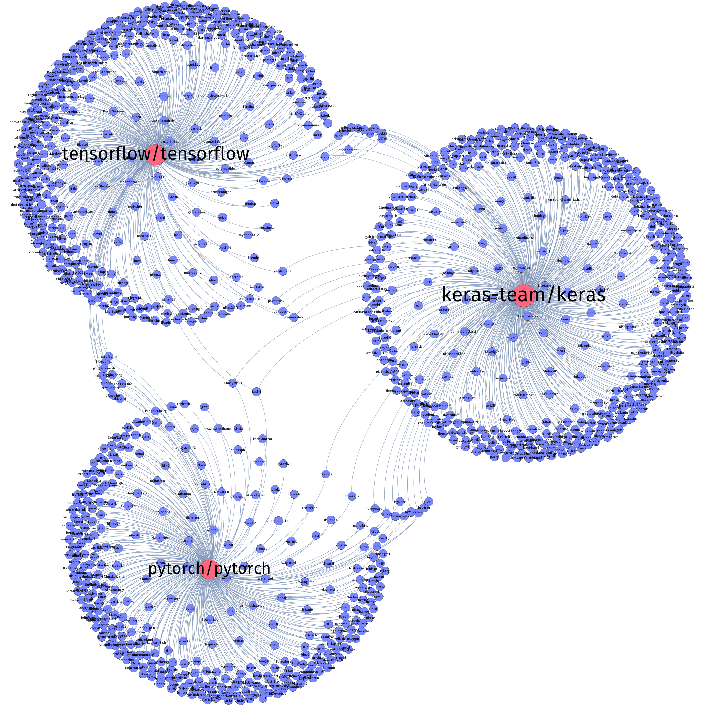

A network of interlinked Github user contributions to deep learning library repositories Keras, TensorFlow and PyTorch. Experiment using Github contributors scraper and Gephi.
Red nodes are repositories. Blue nodes are users.
Several users are linked to more than one repository. Two users are also linked to all three repositories. One of these users is labelled Anonymous, which opens up for the possibility of more than two users contributing to all three repositories.